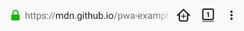
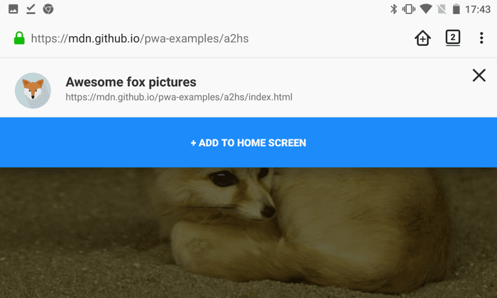
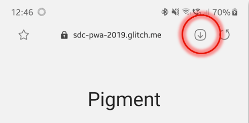
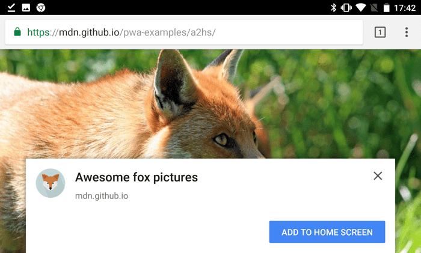
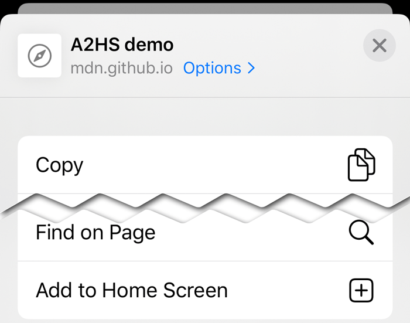
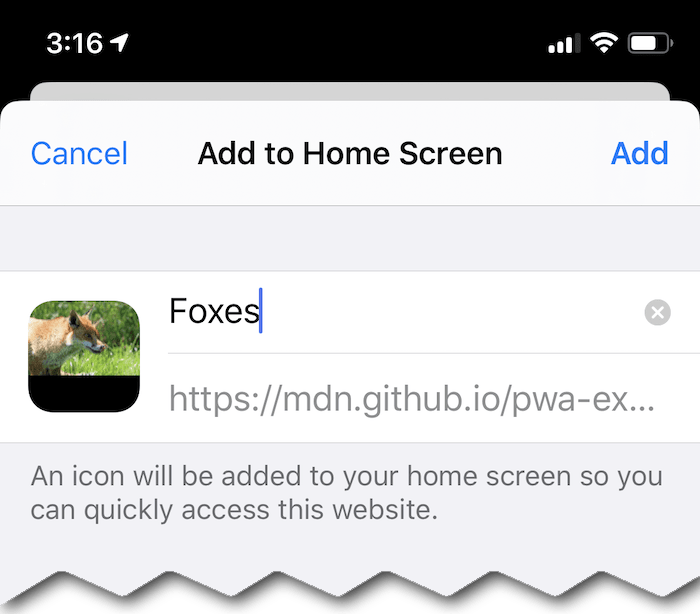
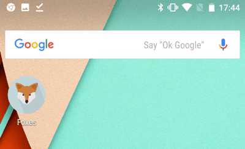

{{draft}}
Web application installation is a feature available in modern browsers that allows users to choose to easily and conveniently “install” a web application on their device so they can access it in the same way they would any other installed app. Depending on the device and features of the operating system and browser, this can result in what is essentially a fully featured application (for example, using WebAPK on Android) or as a shortcut added to their device’s screen. This guide explains how installation is performed, what it means, and what you need to do as a developer to let your users take advantage of it.
The option to install a web application is part of the Progressive Web App philosophy—giving web apps the same user experience advantages as native apps so they can be competitive. Installed applications are more conveniently invoked as they have a presence in a device’s home screen or app list or bar. This makes it simple for a user to use a gesture to access an app by tapping or clicking its icon. The application itself may then manifest as in a chromeless view (without the full browser chrome) but it nevertheless is executing effectively as a tab within the browser.
For users, the experience of a seemingly-native PWA is more comfortable and convenient than a typical web site. By reducing the user experience differential between the web app and native apps on the user's device, you reduce both the loss of any muscle memory they have revolving around the native interface of the device and the sensation of "something isn't quite right" that users can experience when switching between native and web-based apps.
Installation is supported by Chrome for Android and Android WebView version 31 and later, Opera for Android 32 onward, Samsung Internet from version 4 onward, and Firefox for Android version 58 and later.
Safari on iOS is a little different. Some parts of the PWA ecosystem are supported, while others are not. iOS 13 introduced a much more comparable install experience, which is also described here.
We've written a very simple example web site (see our demo live, and also see the source code) that doesn't do much, but was developed with the necessary code to allow it to be installed, as well as a service worker to enable it to be used offline. The example displays a series of fox pictures.If you have a web application compatible device available, use it to navigate to our demo at https://mdn.github.io/pwa-examples/a2hs/. You'll see fox pictures, but more importantly, some form of user interface will be available to let you install the site as a web app.
The UI for this varies from browser to browser, but the general idea is the same. Unfortunately, there isn't a standard for icons and symbols used for operations such as this.
On an Android device using Firefox, you'll see a "home" icon with a plus (+) icon inside it—this is the "Add to Home screen" icon displayed for any site that has the necessary features in place.

Tapping this will show a confirmation banner—pressing the banner's big "+ ADD TO HOME SCREEN" button completes the action, adding the app to the Home screen. Note that in Android 8 and higher, a system-level "Add to Home screen" permission dialog will be shown first.

If you have Samsung Internet in your mobile device you will see a different icon.

Tapping that icon should then take you to the same confirmation banner shown in Firefox above.
If you have Google Chrome for Android available, the experience is slightly different; upon loading our site, you'll see an install banner pop up asking whether you want to add this app to your Home screen.

Note: You can find out a lot more about Chrome install banners from the article Web App Install Banners.
If you choose not to add it to your Home screen at this point, you can do so later using the "Add to Home Screen" icon in the main Chrome menu.
On Apple's iOS (including iPhoneOS and iPadOS), the Safari browser built into the device has some support for web applications, including support for the add to home screen feature. To add a web app to the home screen (also known as the launcher or springboard), tap the sharing button () at the bottom of the screen:
This calls up the sharing panel. Among the options should be the "Add to Home Screen" option, unless it's been specifically removed from the list by the user editing the optons displayed:

Choosing "Add to Home Screen" here presents the confirmation dialog box, which not only confirms that the user wants to add the app to the home screen, but also lets the user customize its name.

Upon clicking "Add," the app is included on the home screen.
Regardless of which browser and device you're using, when you choose to add the app to your home screen or app launcher, it'll show up there looking just like any application. Typically this means you'll see the app's icon along with a short title.

When you tap the web app's icon on the home screen, it opens up in a full screen web environment, without the browser's UI around it.